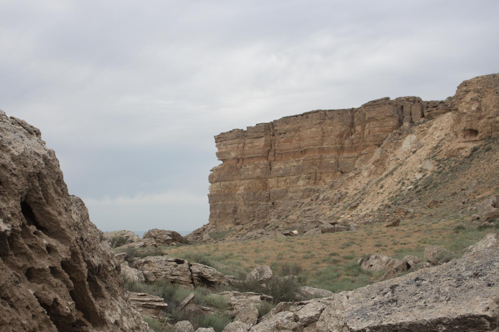

Жыгылган

Что такое Жыгылган?
Жыгылган (каз. Жығылған — "упавший", "упавшая земля") — уникальная природная впадина, образовавшаяся в результате провала земной поверхности в Мангистауской области Казахстана. Этот процесс связан с растворением подземными водами известняковых пород, что привело к образованию обширных пещер и полостей. Со временем своды этих полостей обрушились, создав современный облик Жыгылган. Это впечатляющее геологическое образование площадью около 9 квадратных километров представляет собой один из самых крупных карстовых провалов в регионе и является ярким примером активных геологических процессов на полуострове Мангистау.
Гипотеза о некарстовом происхождении
Существует также гипотеза, что провал Жыгылган мог образоваться в результате тектонических движений, которые вызвали обрушение земной коры. В этом случае провал мог быть вызван не только карстовыми процессами, но и сейсмической активностью, что делает его изучение особенно интересным для геологов.
Географическое положение
Провал Жыгылган находится:
- На полуострове Мангистау
- В Мангистауском районе Мангистауской области
- В пределах плато Устюрт
- На территории древнего морского бассейна
- Площадь провала — около 9 квадратных километров
- Глубина — до 50-80 метров
- Возраст образования — предположительно несколько тысяч лет
- Тип — карстовый провал, образованный обрушением подземных полостей
- Лето — жаркое и сухое, температура достигает +45°C
- Зима — холодная, с температурами до -25°C
- Осадки — крайне редкие, менее 150 мм в год
- Ветры — сильные и частые, особенно в зимний период
- Полынь — различные засухоустойчивые виды на склонах
- Солянки — растения, адаптированные к засоленным почвам
- Эфемеры — весенние растения с коротким циклом развития
- Галофиты — растения дна провала, приспособленные к повышенной влажности
- Млекопитающие: джейран, корсак, заяц-толай, ушастый еж
- Птицы: степной орел, пустельга, жаворонки, каменки
- Пресмыкающиеся: степная агама, песчаный удавчик, среднеазиатская черепаха
- Беспозвоночные: скорпионы, фаланги, жуки-чернотелки
- Является уникальным геологическим памятником природы
- Демонстрирует активные карстовые процессы региона
- Служит рефугиумом для растений и животных
- Представляет научную ценность для изучения геологических процессов
- Связан с многочисленными легендами о "провалившейся земле"
- Считается священным местом у местного населения
- Служил ориентиром для кочевников и караванов
- Упоминается в устном народном творчестве казахов
- Наиболее удобный маршрут начинается из города Актау
- Необходим внедорожник и желательно сопровождение местного гида
- Дорога занимает около 3-4 часов в одну сторону
- Лучшее время для посещения — весна и осень
- Обязательно взять запас воды, продуктов и топлива
- Сам провал с его впечатляющими размерами
- Панорамные виды с края провала
- Контраст растительности дна и склонов
- Геологические обнажения на стенах провала
Геологические особенности
Жыгылган представляет собой уникальное геологическое образование:
Провал образовался в результате растворения известняковых пород подземными водами, что привело к формированию обширных пещер и полостей. Когда свод таких полостей не выдержал нагрузки, произошло обрушение, создавшее современный облик Жыгылган.
Знаешь ли ты? Название "Жыгылган" буквально переводится как "упавший", что точно отражает процесс образования этого удивительного места — внезапного провала земной поверхности.Климат
Климат в районе провала Жыгылган резко континентальный:
Растительный мир
Растительность провала Жыгылган разнообразна по сравнению с окружающими территориями:
Животный мир
Фауна провала Жыгылган представлена:
Провал служит своеобразным убежищем для животных, особенно в жаркое время года, когда на дне сохраняется относительная прохлада.
Природоохранная ценность
Жыгылган имеет высокую природоохранную ценность:
Культурное и историческое значение
Жыгылган имеет особое значение в культуре региона:
Согласно одной из легенд, провал образовался внезапно, поглотив целое поселение, что объясняет его название и мистический ореол.
Как добраться и что посмотреть?
Поездка к провалу Жыгылган требует подготовки:
Интересные факты
- Жыгылган — один из крупнейших карстовых провалов в Казахстане.
- Провал виден из космоса как темное пятно среди светлых пород плато.
- На дне провала иногда скапливается дождевая вода, образуя временные озера.
- Местные жители до сих пор считают провал мистическим местом.
- Площадь провала (9 кв км) сопоставима с размером небольшого города.
- Геологи предполагают, что подобные провалы могут образовываться и в других частях Мангистау.
Источники информации
- Казахская академия наук. Природа Мангистау и Устюрта. Алматы, 2014.
- Медеу А. "Геологическое наследие Казахстана". Астана, 2012.
- Путеводитель по Мангистау. Актау, 2021.
- Архив Мангистауского областного историко-краеведческого музея.
Теги
#местности #провал #Жыгылган #карст #геология #Мангистау #Мангышлак #Устюрт